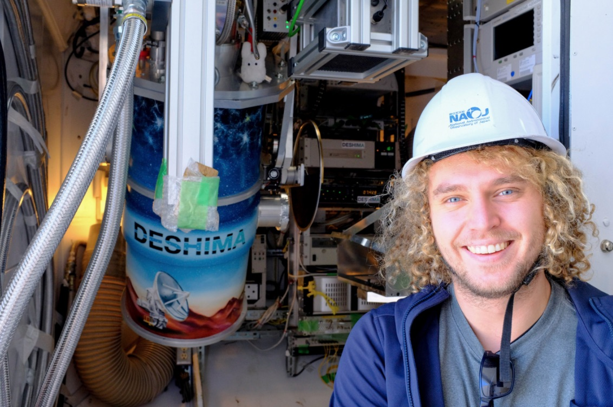
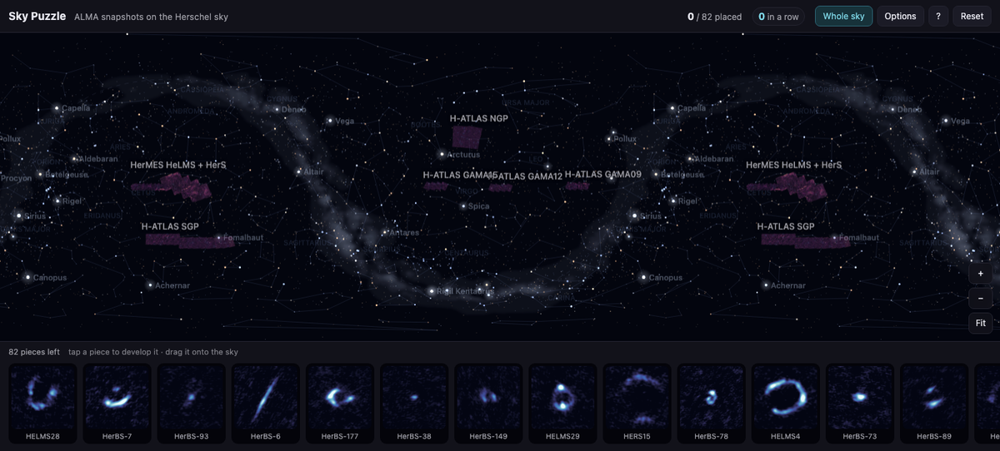
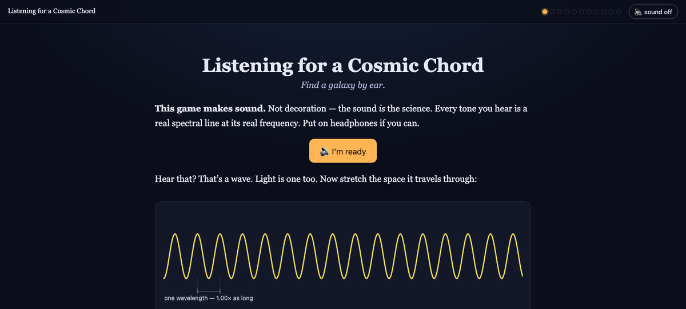

Nanoscale technology for extragalactic science
New instruments enable larger and deeper observations than before.
Here's me testing one such prototype in Chile!
For the first half-billion years after the Big Bang, we do not know whether the Universe was already hiding its newborn stars behind dust, or was still almost perfectly transparent. The two possibilities differ by an order of magnitude: a million dust-obscured galaxies, or essentially none.
Each point of light is a measurement of how quickly the Universe formed stars at that moment in cosmic history. Teal points are the total rate, measured from starlight and corrected for the dust we know about; red points are only the part caught directly through its warm dust glow. (Even the backdrop is part of the story: the dark lanes crossing the Milky Way behind this figure are nearby cosmic dust, blotting out starlight.) Dust hides most star formation for most of cosmic time — but beyond a redshift of six its contribution has never been measured, except in one galaxy (↗) where I detected dust just 600 million years after the Big Bang. The lower panel distils it into one number — the fraction of all star formation hidden by dust: about 55% today, peaking near 80% at cosmic noon and still dominant back to redshift four or five (Zavala et al. 2021). Beyond that the measurements stop agreeing: the shaded range opens from a few percent to almost everything, and in the first billion years my own two anchors pull in opposite directions. Pinning down when dust-obscured galaxies came to dominate — the day the Universe turned dark — is the key question driving my research.
I'm an astronomer at Chalmers University of Technology in Gothenburg, Sweden, hunting the hidden half of cosmic star formation with the world's largest infrared and radio telescopes — above all ALMA. The research page walks through how each of my projects feeds into the question above; my CV has the short version.

New instruments enable larger and deeper observations than before.
Here's me testing one such prototype in Chile!
This colour of light can probe the insides of these extremely active and dust-obscured galaxies. Light from newly-created stars is absorbed by cold interstellar dust, which re-emits it in far-infrared colours. To get an idea what I've managed to see with them, check out my publications.
Two of my papers, made playable. Not illustrations of the science — the same images and the same line frequencies the papers used, in a browser, on a phone as well as a laptop, free and with nothing to install.

297 ALMA snapshots of gravitationally lensed galaxies, handed to you one at a time and badly stretched. Develop each one until the ring or arc appears, then put it back where the telescope found it.

A galaxy's CO lines form a harmonic series, so a galaxy is literally a chord and its redshift is the key it is played in. Find that key by ear, then design the ALMA observation that would confirm it.
Click this beautiful red button to do so!